Kamicho, Hyogo: things to do, food and stays
Kamicho · Hyogo
Kamicho
Highlighted on the Hyogo map.
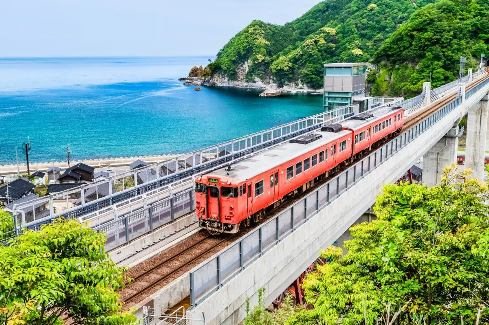
Stay
さだ助 別邸 ICHIJO
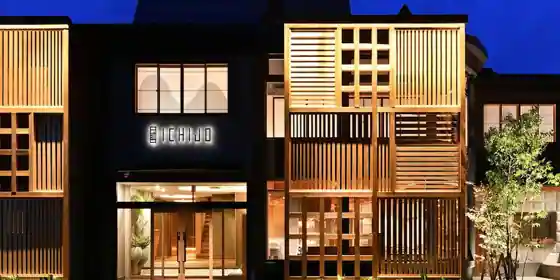
Sada Jo Bettei ICHIJO
かに楽座 甲羅戯
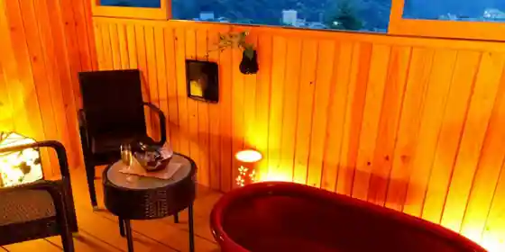
Kani Rakuza Kora Gi
香住 いわや
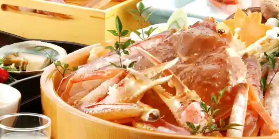
Kasumi Iwaya
The Sanaton
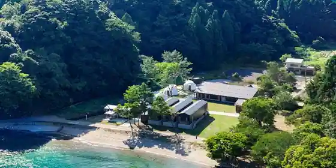
The Sanaton
さだ助
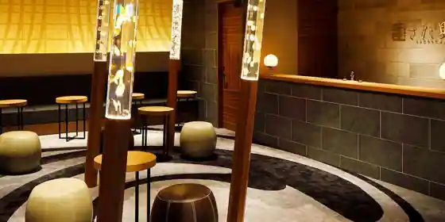
Sada Jo
Inn at Junshokuzaiyakasumi Onsen in Kasumikushitahama, Kamicho.
颯花
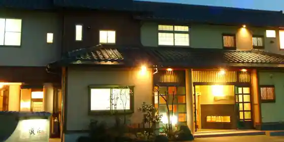
Satsu Hana
Inn at Satsu Onsen in Kasumikumunan'En, Kamicho.
夕香楼 しょう和
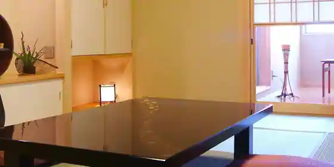
Yuka Ro Sho Wa
Inn at Okosamakangei Onsen in Kasumikunanokaichi, Kamicho with family-friendly stays.
波音の宿 くろしお
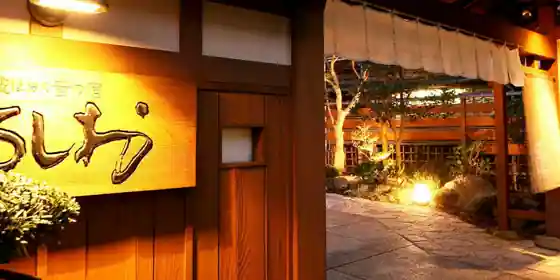
Namioto No Yado Kuroshio
Inn in Kasumikukuntani, Kamicho with kaiseki dinners and local seafood dinners.
香住 ぬくもりの宿 いしだ
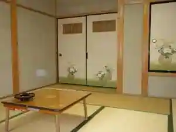
Kasumi Nukumorino Yado Ishida
Inn in Kasumikukasumi, Kamicho with family-friendly stays.
香住 海鮮の宿 民宿みさき
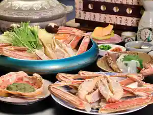
Kasumi Kaisen No Yado Minshuku Misaki
Family-run minshuku in Kasumikukasumi, Kamicho with local seafood dinners.
香住 うましものと香りの宿 庄屋
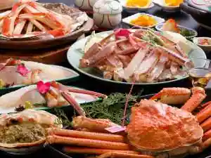
Kasumi Umashimonoto Kaori No Yado Shoya
Inn in Kasumikukasumi, Kamicho with local seafood dinners.
香住 かにすきの宿 かや荘
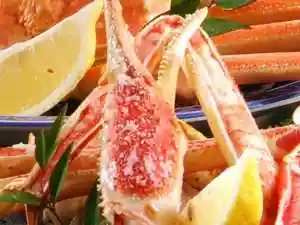
Kasumi Kanisukino Yado Kaya So
Inn in Kasumikunanokaichi, Kamicho with local seafood dinners.
Dining
まる屋
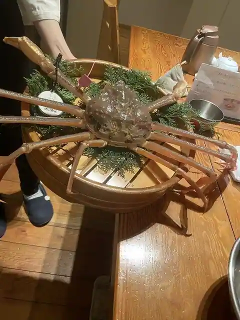
Maru Ya
KAN-ICHI
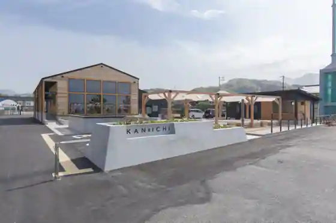
KAN-ICHI
にしたにや海華
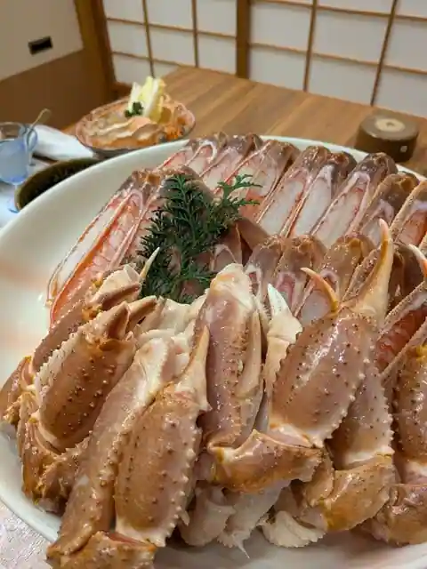
Nishitaniya Umi Hana
かに八代 れんが亭
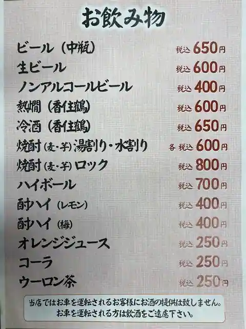
Kani Yatsushiro Renga Tei
道の駅 あまるべ
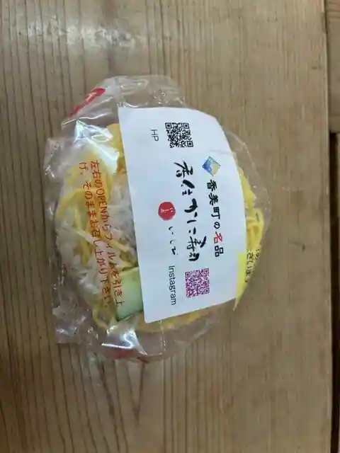
Michi No Eki Amarube
旨いもんや 笑ら
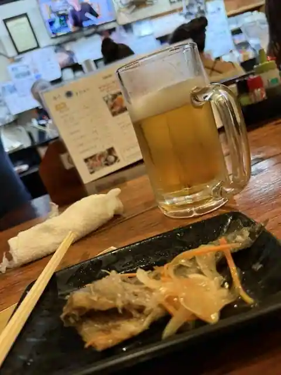
Umai Monya Warai Ra
味処 喜いち
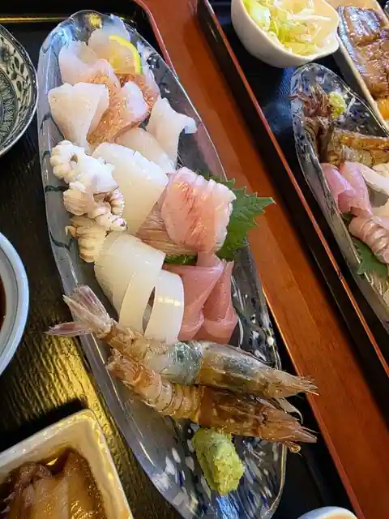
Ajidokoro Ki Ichi
道の駅 村岡ファームガーデン
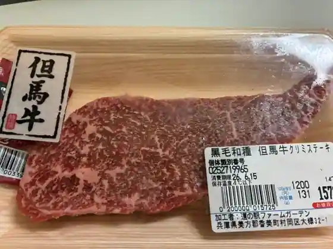
Michi No Eki Muraoka Famu Garden
魚や はらとく
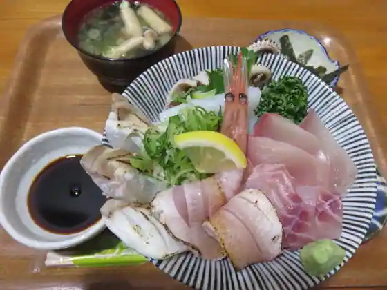
Sakanaya Haratoku
古民家cafe 岡見
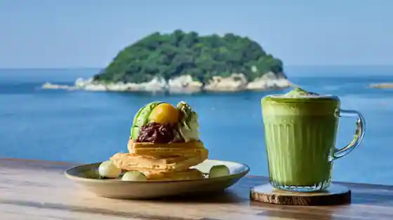
Ko Minka cafe Okami
華和ゐ 香住本店
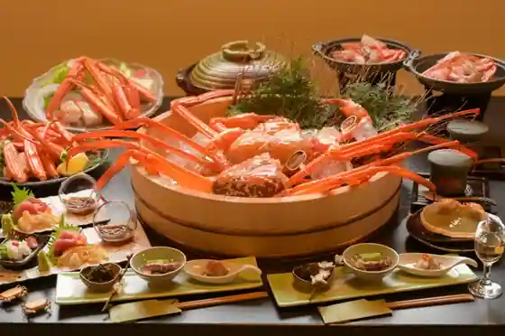
Hana Wa I Kasumi Hon
福智屋
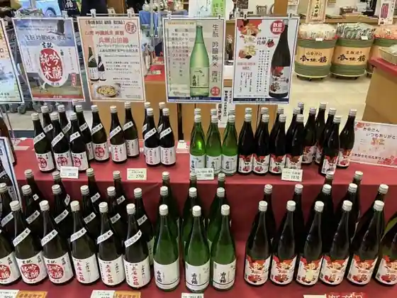
Fukuchi Ya
三吉 かに楽座 甲羅戯
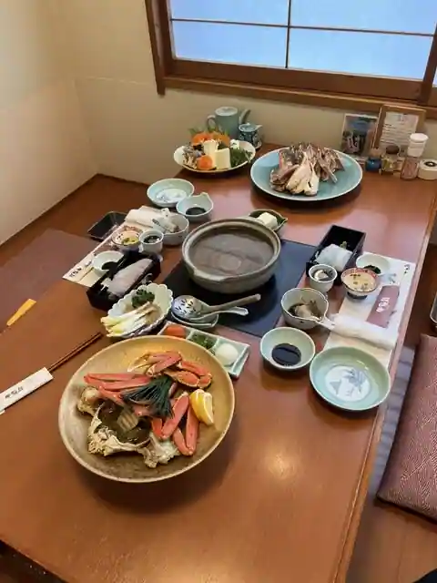
Sankichi Kani Rakuza Kora Gi
三七十館
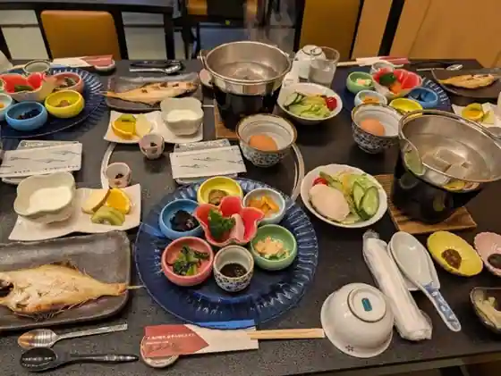
Sanshichi Ju Kan
道の駅 ハチ北
Michi No Eki Hachi Kita
荒神の宿 三宝
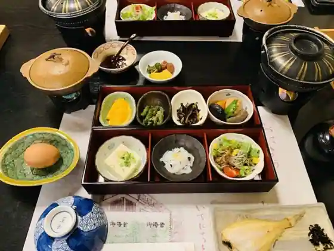
Kojin No Yado Sanpo
せきのや
Sekinoya
ひさ家
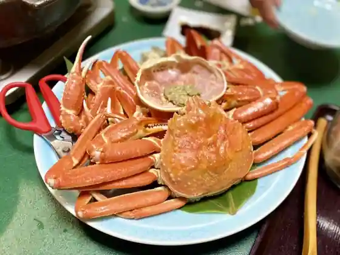
Hisa Ie
旅の庵 大吉
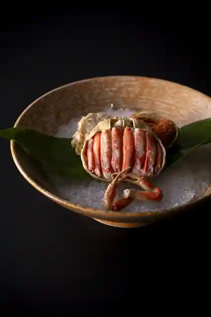
Tabi No Iori Daikichi
きむらや
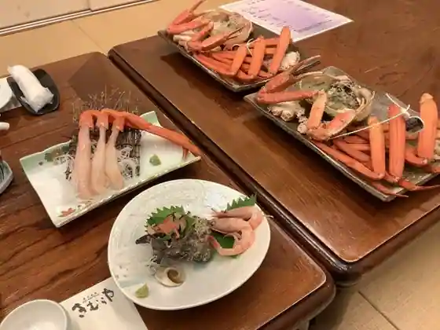
Kimuraya
膳
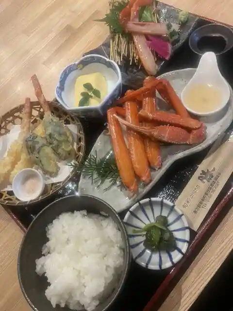
Zen
はまな
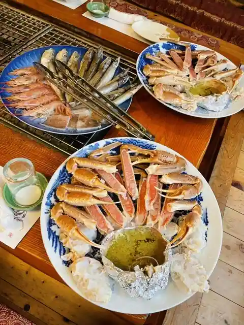
Hamana
芭蕉庵
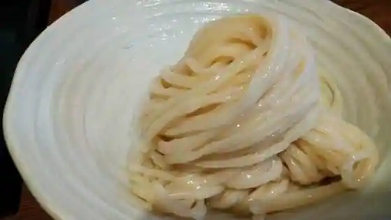
Basho Iori
Sights
Amarube Tekkyo (Sora no Eki)